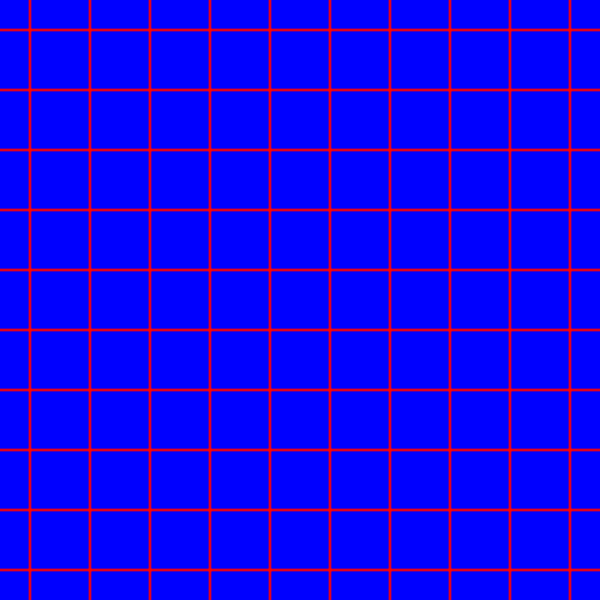

Warp the coordinate space
A bit of theory about the OpenGL graphic pipeline
In the OpenGL graphics pipeline, the fragment processor is the programmable unit that operates on fragment values. Shaders that are intended to run in this processor are called fragment shaders. Refer to the book OpenGL Shading Language by R.J. Rost and B. Licea-Jane for a deep understanding of the OpenGL graphics pipeline.
The fragment values are computed between the vertex processor and the fragment processor, and they are made available to the fragment shader through special input variables. The primary inputs to the fragment shader are the interpolated varying variables.
The window coordinate position of the fragment is communicated
through the special input varying variable
vec4 gl_FragCoord. This window position value is the
result of the fixed functionality that interpolates primitives after
vertex processing to generate fragments.
A simple exercise: warp an image by transforming the space coordinates
The fragment shader is executed on the fragment processor and
produces output values based on the input values that are provided.
One of the user-defined output variables is the
vec4 gl_FragColor variable, which assigns the RGB
colour to the fragment.
There is a notebook of this exercise, have look at
https://observablehq.com/@riccardoscalco/warp-glsl-coordinate-space.
A fragment shader cannot change the fragment position
gl_FragCoord, its task is to define the
gl_FragColor variable as a function of
gl_FragCoord.
In the next examples, the fragment position is expressed by a
variable vec2 p with values in [0, 1]. The
exercise we are going to follow is based on two functions. The first
function defines the fragment colour taking the fragment position as
the argument: vec4 colour = f(p). The second function
vec2 g(p) warps the coordinate space defined by the
values of p.
The composition of f and g will output a
distorted version of the original drawing:
vec4 warpedColor = f(g(p)).
Draw a lattice on the canvas
To better visualize the space transformation, the function
f above implements a lattice.
Listing 1 shows the implementation of the
smoothSquare function, which produces a smooth square
function along a given direction, with peaks nearly
2 * delta wide. The lattice function is
defined as the sum of two smoothSquare drawn at two
perpendicular directions: p.x and p.y.
float smoothSquare (float x) {
float delta = 0.04;
float k = 0.5;
float w = fract(x);
return
smoothstep(k - delta, k, w) *
(1. - smoothstep(k, k + delta, w));
}
float lattice (vec2 p) {
return smoothSquare(p.x) + smoothSquare(p.y);
}Listing 1.
Function lattice draws a lattice on the space.
 Note
that the number of cells per unit of area can be increased with
a scaling of the space coordinates, for example with
p → p * s, where s is the scaling
factor (see listing 2 below).
Warp the coordinate space with a rotation around a point
For the sake of convenience, we are going to implement the space
transformation g as a rotation around the canvas
centre.
Function translateAndScale in
listing 2 scales the vector
p of a factor s and translates
p so that the point p = vec2(0., 0.) would
be at the centre of the canvas.
vec2 translateAndScale (vec2 p, float s) {
return p * s - s / 2.;
}Listing 2.
Scale and translate the space coordinates.
Function rotate2D in
listing 3 implements a two-dimensional
rotation of an angle alpha.
Function warp applies the rotation to the point
p, with an angle alpha that is
proportional to the distance of p from the canvas
centre.
mat2 rotate2d(float alpha){
return mat2(
cos(alpha), -sin(alpha),
sin(alpha), cos(alpha)
);
}
vec2 warp (vec2 p) {
float t = 0.1;
float r = length(p);
float alpha = t * r;
return rotate2d(alpha) * p;
}Listing 3.
Function warp rotates the two-dimensional vector
p of a variable angle.
 The angle
The angle
alpha is a function of the distance between the
canvas centre and the vector p.
Distort the lattice with function composition
Eventually, we make use of function composition to warp the lattice
drawn in listing 1. The function
lattice(warp(p)) results from the composition of
functions warp and lattice.
vec3 field(vec2 p) {float z = lattice(warp(p));return vec3(z, 0., 1. - z); } void main() { vec3 c = field(st); gl_FragColor = vec4(c, 1.0); }
Listing 4.
Function lattice has signature
float lattice (vec2 p), whereas function
warp has signature vec2 warp (vec2 p).
The composition of the two can only be
h = lattice ∘ warp with signature
float h (vec2 p).